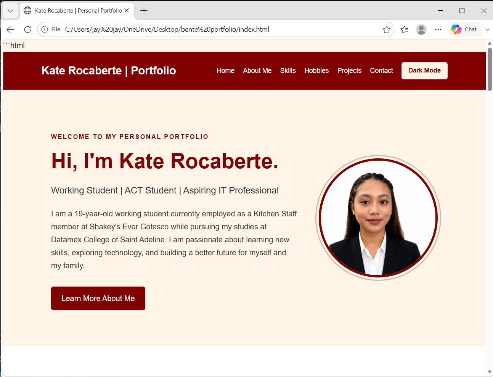
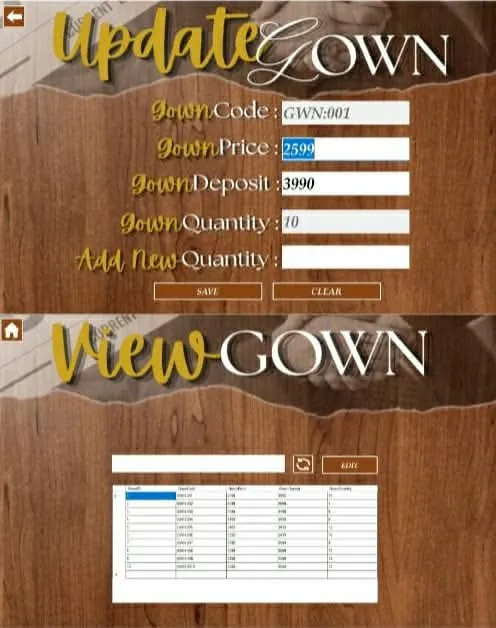
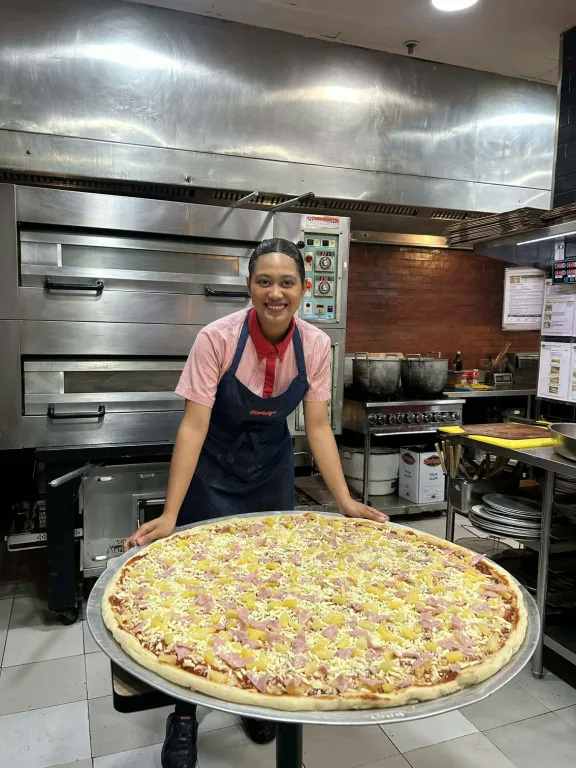

WELCOME TO MY PERSONAL PORTFOLIO
I am a 19-year-old working student currently employed as a Kitchen Staff member at Shakey's Ever Gotesco while pursuing my studies at Datamex College of Saint Adeline. I am passionate about learning new skills, exploring technology, and building a better future for myself and my family.
Learn More About MeHi! My name is Kate Rocaberte, and I am 19 years old. I am the eldest of three siblings, which has taught me to be responsible, independent, and understanding. As the eldest, I always try my best to become a good example to my younger siblings and help my family whenever I can.
I am currently working as a Kitchen Staff member at Shakey's, Ever Gotesco, while pursuing my studies at Datamex College of Saint Adeline, taking up Associate in Computer Technology (ACT). Balancing work and school is not always easy, but I continue to do my best because I want to achieve my dreams and build a better future for myself and my family.
Through my work experience, I have learned the importance of teamwork, time management, patience, discipline, and communication. Working while studying has taught me how to manage my time wisely, handle responsibilities, and stay focused even when things become challenging.
As an Information Technology student, I am interested in learning more about technology, programming, web development, and designing websites. I want to improve my skills in HTML, CSS, problem-solving, and other areas of IT that will help me grow personally and professionally.
During my free time, I enjoy exploring new things, learning new skills, spending time with my loved ones, and improving myself. I believe that every experience, whether good or bad, teaches us valuable lessons that help us become stronger and wiser.
My goal is to graduate, develop my skills, find better opportunities, and give my family a comfortable life. I know that success takes time, hard work, and dedication, so I am willing to keep learning and improving myself along the way.
I believe that being successful is not about how quickly you achieve your dreams, but about how determined you are to keep going despite the challenges. I am proud of how far I have come, and I will continue working hard to become the best version of myself.
Basic knowledge of creating and designing websites using HTML and CSS.
Ability to use computers and learn different software and digital tools.
Ability to cooperate with classmates and coworkers to achieve common goals.
Ability to communicate clearly with customers, classmates, and coworkers.
Ability to balance work responsibilities and school activities efficiently.
My hobbies include going on rides, exploring different places, and working. I enjoy going on rides because they help me relax, clear my mind, and take a break from my busy routine. I also enjoy working because it allows me to gain experience, learn new things, and become more independent.
When it comes to my interests, I am interested in many things, especially the challenges that life brings. I believe that every challenge is an opportunity to learn, grow, and become a stronger person. I am interested in discovering new experiences, overcoming difficulties, and learning valuable lessons from the people and situations around me.
I enjoy challenging myself because I believe that life is not always easy, but every struggle has something to teach us. These experiences motivate me to keep moving forward, improve myself, and work harder to achieve my dreams.
These projects and experiences represent my skills, learning journey, and personal development.

A personal website created using HTML and CSS to showcase my personal information, skills, hobbies, and interests as an Associate in Computer Technology student.
Technologies: HTML and CSS

A school project designed to manage gown rentals, customer information, rental transactions, deposits, and additional charges for late returns or damaged gowns. The system aims to organize rental records and make transactions easier to monitor.
Technologies: Microsoft Visual Studio 2010

My work experience as a Kitchen Staff member at Shakey's Ever Gotesco, where I apply teamwork, time management, communication, and attention to detail while helping maintain kitchen cleanliness and supporting daily operations.
Thank you for visiting my portfolio. Feel free to connect with me to learn more about my work, projects, and interests.
Email: your-email@example.com
Facebook: Visit Facebook
GitHub: Visit GitHub